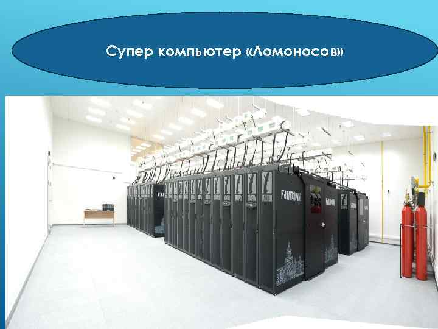

Урок 3. Основные компоненты комрьютера и их функции
Перечень рассматриваемых вопросов:
- Компьютер, основные его компоненты и их функции.
- Компьютерная сеть.
- Группы, на которые можно разделить все устройства компьютера.
- Формула для нахождения информационного объёма через компьютерную сеть.
Тезаурус:
Современный компьютер – это универсальное электронное программно управляемое устройство для работы с информацией.
Вся информация представляется в компьютере в виде двоичного кода.
Тактовая частота процессора равна количеству тактов обработки данных, которые процессор производит за 1 секунду.
Разрядность процессора – максимальная длина двоичного кода, который может обрабатываться за одну операцию или период одного такта.
Программный принцип работыкомпьютера – это совокупность программ на компьютере, с помощью которых осуществляется его работа.
Локальная компьютерная сеть – это сеть, находящаяся (на небольшой территории) служащая для пользования одними и теми же данными и услугами, которая объединяет небольшое количество компьютеров.
Наименьший элемент памяти компьютера – бит.
Интернет – это глобальная компьютерная сеть, которая связывает между собой миллионы компьютеров и сетей со всего мира.
Формула, которая используется при решении типовых задач:
I = V · t
где I – объём файла, t – время, V – скорость передачи данных.
Теоретический материал для самостоятельного изучения
Мы не представляем теперь нашу жизнь без современных электронно-вычислительных устройств. А какими устройствами пользуются почти все? Конечно, это телефоны, планшеты, ноутбуки и компьютеры. Компьютеры есть сейчас в каждом доме и нужны нам для самых разных целей. И вот сегодня на уроке мы поговорим о том, что такое современный компьютер, из каких устройств он состоит, и каковы их функции.
Самый первый компьютер был создан в 1945 году в США. Сейчас это один из важных объектов, который изучают на уроках информатики.
Современный компьютер – это универсальное электронное программно управляемое устройство для работы с информацией.
Универсальным его называют потому, что он может обрабатывать, хранить, передавать самую разнообразную информацию, которую люди используют в разных видах деятельности.
Компьютеры могут обрабатывать разные виды информации: числа, текст, изображения, звуки.
Но вся информация представляется в компьютере в виде двоичного кода, т.е. последовательностей нулей и единиц. Информацию, которая предназначена для обработки на компьютере и представленную в виде двоичного кода называют двоичными данными. Последовательности единиц и нулей в компьютерном представлении соответствуют электрическим сигналам – включено и выключено.
Данные компьютер обрабатывает с помощью программ, как и данные они также представляются в виде двоичного кода. Такой принцип работы называется программным.
Все устройства, входящие в состав компьютера, можно разделить на два вида: устройства, входящие в системный блок и внешние устройства. Центральным устройством системного блока является процессор. Он принимает данные, считывает из оперативной памяти команды, анализирует и выполняет их, а также отправляет результат работы на требуемое устройство.
Основными характеристиками процессора являются его тактовая частота и разрядность. Тактовая частота процессора равна количеству тактов обработки данных, которые процессор производит за 1 секунду.
Разрядность процессора – максимальная длина двоичного кода, который может обрабатываться и передаваться одновременно.
Память компьютера предназначена для приёма, хранения и передачи данных. Наименьший элемент памяти компьютера – бит.
Память бывает внутренней и внешней.
Внутренняя память встроена в компьютер, ею управляет процессор. Внешняя же память подключается к компьютеру и предназначена для хранения большого объёма информации, такие устройства называют носителями информации.
Все устройства, которые не входят в состав системного блока называются внешними. Это клавиатура, мышь, монитор, принтер, микрофон и другие. все их можно разделить на устройства ввода и вывода.
Для обмена информацией компьютеры объединяются в компьютерные сети.
Локальная компьютерная сеть – это сеть, находящаяся на небольшой территории, служащая для пользования одними и теми же данными и услугами, которая объединяет небольшое количество компьютеров./p>
Интернет – это глобальная компьютерная сеть, которая связывает между собой миллионы компьютеров и сетей со всего мира.
Скорость передачи данных является главной характеристикой компьютерной сети. Объём передаваемых данных равен произведению скорости передачи на время и измеряется в битах, килобитах, мегабитах или в гигабитах в секунду.
Разберём задачу.
Сколько времени будет скачивать файл размером 2 килобайт при Интернет-соединении с максимальной скоростью скачивания 16384 бит в секунду?
Решение:
Информационный объём данных находится, как произведение скорости передачи на время, значит, чтобы найти время скачивания файла, нужно информационный объём разделить на скорость скачивания файла. Но, прежде, чем начать считать, нужно килобайты перевести в биты.
2 килобайт – это 2048 байт или 16384 бита.
Итак, 16384 делим на 16384, получаем, что для скачивания данного файла потребуется одна секунда.
Сегодня мы узнали, что такое современный компьютер, каковы его основные компоненты и какие функции они выполняют. Также выяснили, что такое компьютерная сеть.
В наше время персональный компьютер всё чаще используется как инструмент выхода в Интернет.
Материал для углубленного изучения темы.
Суперкомпьютер «Ломоносов»
Суперкомпьютер «Ломоносов» построен компанией «Т-Платформы» для МГУ им. М.В. Ломоносова. В 2009 году он установлен в Московском университете.
Разрабатывали суперкомпьютер 4 года:в 2009 году проектировали, устанавливали и вводили в эксплуатацию базовую часть «Ломоносова». Общий объём памяти составил 56,5 ТБ, объём хранилища - 0,35 ПБ, объём резервной системы – 234 ТБ без сжатия. Потребляемая мощность суперкомпьютера составила 1,5 МВт.
В 2010 году общий объём оперативной памяти увеличили до 79,92 ТБ, хранилища – до 1,75 ПБ.
В 2011 году провели расширение системы – теперь она использует 32768 ядер / 4096 узлов на базе процессоров IntelXeon 5570.
В 2012 году общий объём памяти увеличился до 92 ТБ, сейчас компьютер потребляет 2,8 МВт.
По состоянию на 24.09.2018 он занимает 3-е место в рейтинге Топ-50 суперкомпьютеров СНГ.
С помощью суперкомпьютера «Ломоносов», уже получены уникальные результаты в разных областях науки, например, в исследовании механизмов генерации шума в турбулентной среде или же в создании новых компьютерных методов проектирования лекарственных препаратов.
В настоящее время он содержит 6654 вычислительных узла, более 94000процессорных ядер, обладает пиковой производительностью 1,37 Пфлоп/с. «Ломоносов» относят к уникальным системам высшего диапазона производительности.
На суперкомпьютере «Ломоносов» решается множество важных задач по обработке сейсмических данных. В частности, осуществляется подавление волн-помех, проводится построение глубинного изображения среды при помощи метода миграции в обратном времени – каждый расчет требует задействовать несколько тысяч процессорных ядер суперкомпьютера «Ломоносов».

В суперкомпьютере используется 6 видов вычислительных узлов и процессоры с разной архитектурой, а также специальные сети.
Суперкомпьютер «Ломоносов» – уникальный универсальный инструмент, помогающий ученым получать уникальные результаты. Возможностями суперкомпьютерного комплекса Московского университета, основу которого составляет суперкомпьютер «Ломоносов», сегодня пользуются более 500 научных групп, представляющих все основные подразделения МГУ, многие институты РАН и другие научные учреждения России.